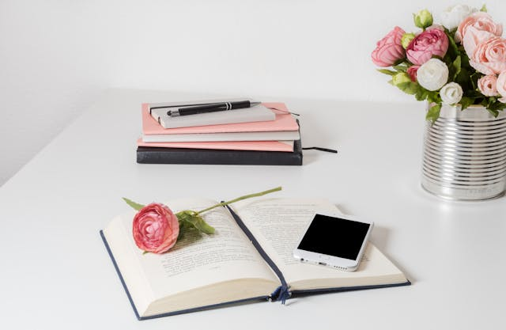
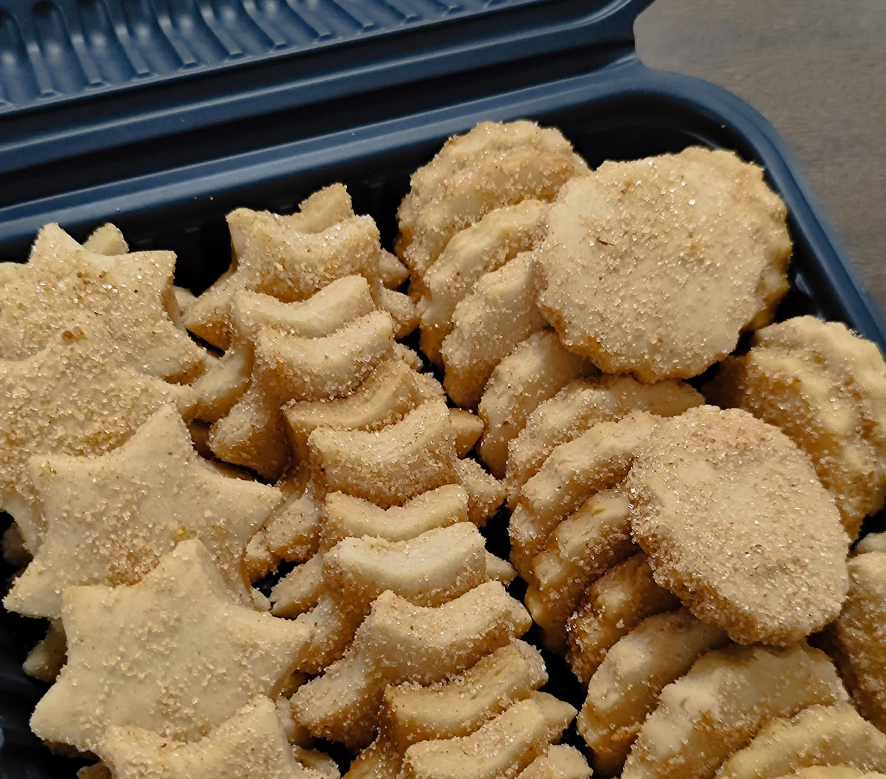
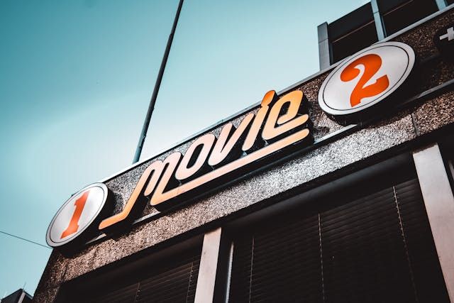
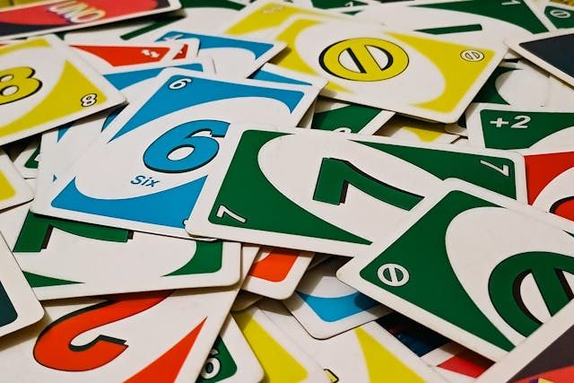

Leer libros es uno de mis pasatiempos favoritos, encontrar un libro nuevo con la emocion de leerlo y saber que pasara en cada historia es lo que mas me gusta. En cada historia puedo conocer personajes nuevos y aprender cosas nuevas, mi lobro favorito es el principito.
Hornear postres es de mis cosas favoritas. Me relaja mucho hacerlo, al igual que disfrutar el resultado. Además, mi parte favorita es cuando mi familia o amigos lo prueben y saber que les gusta.
Ver películas o series es mi forma perfecta de desconectarme. Me gusta cuando es intrigante la historia y emocionarme con los personajes.
Me gusta mucho ya que es una forma divertida de pasar tiempo con familia o amigos. Siempre hay un poco de competencia y lo mejor, es que cada partida es diferente.
